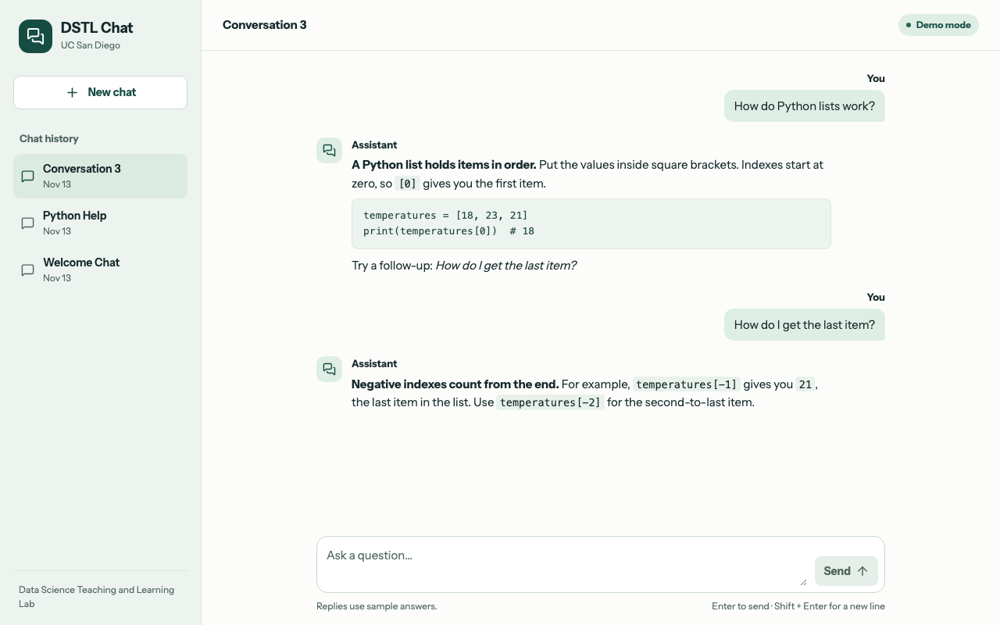
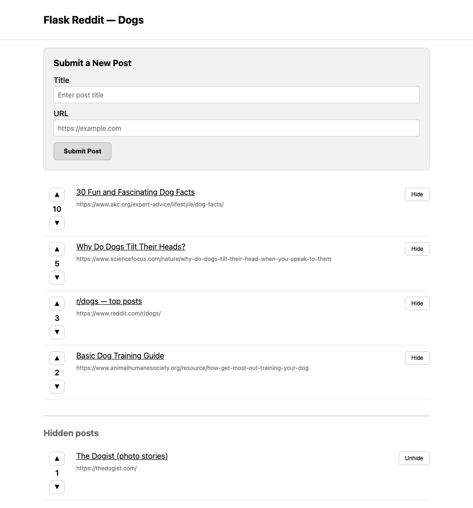

Morro
Forecasting droughts and cyclones, then comparing simulated cloud-seeding interventions.
About the projectThings I’ve built, and what I learned building them.
Public projects, team collaborations, and smaller experiments. Each entry describes my contribution and links to the code.
Forecasting droughts and cyclones, then comparing simulated cloud-seeding interventions.
About the project
A shipboard planning prototype for exploring ocean alkalinity, plume simulations, and fleet routes.
About the projectReview AI-proposed course updates in teaching order, with changes shown in the materials students see.
About the project
Canvas assignments, academic email, and personal deadlines in one student dashboard.
About the project
A fitness journal that turns a description of a meal or workout into an entry you can review.
About the project
A wedding-planning workspace for venue shortlists, inquiry drafts, and guest RSVPs.
About the projectAn explainable pipeline that turns solar installation records into a ranked shortlist.
About the project
A small chat application with saved conversations, formatted code, and a local demo.
About the project
A small link-sharing feed with voting, hidden posts, and persistent storage.
About the projectI was also part of GravitechX, Livermore High School’s robotics team. My GitHub includes a fork of the team’s 2023 Java robot code.
This website is also on GitHub.